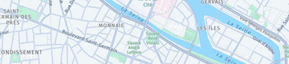
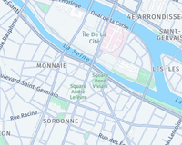

01
Service sur place
Une immersion sensorielle au sein de notre salle chaleureuse avec un service attentionné et personnalisé.
Gastronomie raffinée & instants chaleureux au cœur du 5ème
Maison Gourmande
Gastronomie raffinée & instants chaleureux au cœur du 5ème
Une cuisine généreuse et inspirée, servie dans une atmosphère élégante et intimiste. Venez savourer une expérience culinaire unique à deux pas de la Seine.

A propos
Ancré dans le charme historique du 5ème arrondissement de Paris, Le Petit Pont célèbre le goût, la convivialité et l'élégance de la table. Nous sélectionnons des produits d'exception pour vous offrir une parenthèse gourmande inoubliable, que ce soit pour un déjeuner chaleureux ou un dîner feutré.
75005 Paris
Profil local a enrichir
Nous sommes ravis de vous accueillir dans le 5ème arrondissement de Paris.
Services
Des attentions délicates et des formules adaptées à chaque moment de gourmandise.


Galerie
Un aperçu visuel de notre univers culinaire et de notre cadre élégant.

Points forts
Des assiettes dressées avec précision pour le plaisir des yeux autant que du palais.
Une équipe réactive et joignable facilement pour répondre à toutes vos demandes particulières.
Une adresse incontournable du quartier, prisée pour sa régularité et son accueil authentique.
Reputation
Une réputation bâtie sur la régularité de nos assiettes et la chaleur de notre accueil.
Une réputation bâtie sur la régularité de nos assiettes et la chaleur de notre accueil.
Contact
Nous sommes ravis de vous accueillir dans le 5ème arrondissement de Paris.
Pour toute réservation spéciale ou demande de groupe, écrivez-nous directement via WhatsApp.
FAQ
Le Petit Pont est idéalement situé dans le 5ème arrondissement de Paris (75005), accessible facilement au cœur du quartier historique.
Vous pouvez nous contacter directement par téléphone ou nous envoyer un message instantané via WhatsApp.
Oui, nous organisons des réceptions de groupe avec des formules adaptées. Contactez-nous à l'avance pour personnaliser votre accueil.
Absolument, l'ensemble de nos formules est disponible en vente à emporter sur simple demande.
Dressage minutieux d'un plat signature préparé par notre chef